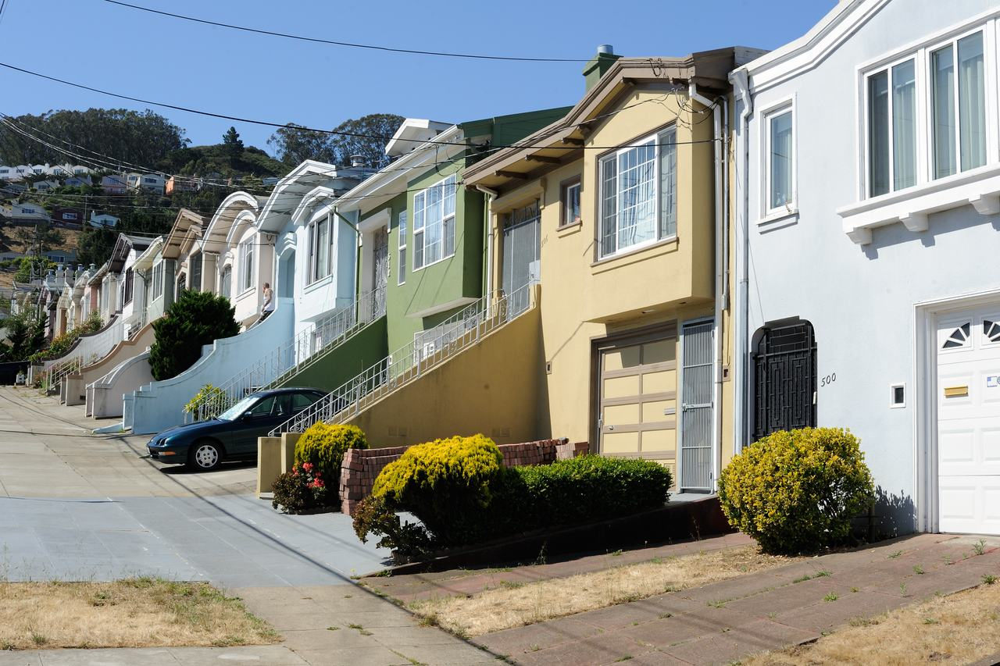

Excelsior
A working-class residential district in the city's south-east, laid out in the early 20th century and named, like its streets, after countries and cities of the world.

Map
Named buildings and landmarks
-
-
-
Streets documented so far
- Allison Street
1 building, built 1997. - Amazon Avenue
A 1930 house recorded as Jerry Garcia's first home. - Athens Street
1 building, built 1925. - Avalon Avenue
1 building, built 1910. - Carter Street
1 building, built 2004. - Geneva Avenue
1 building, built 1922. - La Grande Avenue
1 building, built 1957. - Lisbon Street
1 building, built 1906. - London Street
1 building, built 1905. - Madrid Street
1 building, built 1911. - Mission Street
1 building, built 1982. - Moscow Street
1 building. - Naples Street
1 building, built 1910. - Ney Street
2 buildings, built 1900–1965. - Paris Street
1 building, built 1915. - Persia Avenue
1 building, built 1919. - Peru Avenue
1 building, built 1914. - Pope Street
1 building, built 1913. - Royal Lane
1 building, built 1906. - Russia Avenue
1 building, built 1915. - Silver Avenue
1 building, built 1922. - Trumbull Street
1 building, built 1965. - Walbridge Street
1 building.
Parks and public spaces
- Crocker Amazon Playground
Regional park, 57.5 acres. - Excelsior Playground
Neighborhood park or playground, 1.9 acres. - John McLaren Park
Regional park, 278.0 acres.
Adjacent neighborhoods
The Outer Mission adjoins west along Mission Street and Bernal Heights north-west beyond Alemany Boulevard. Portola is north-east across the ridge, and Visitacion Valley south-east on the far side of McLaren Park.